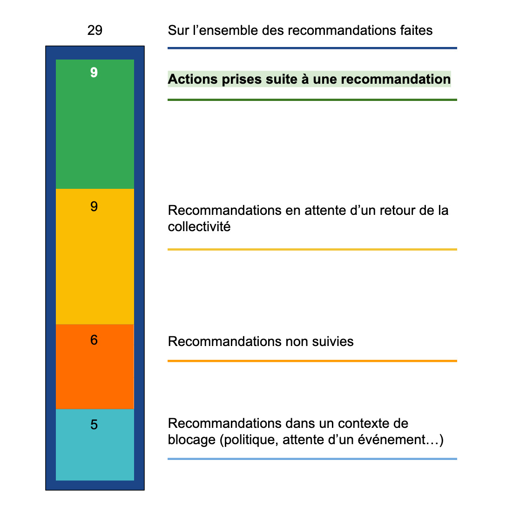

Actions engagées grâce à UrbanVitaliz

 |
Notre impact est atteint lorsqu'une collectivité entreprend une action suite à une de nos recommandations. En moyenne, nous faisons 2 à 3 recommandations pour un site dans les 2 premiers mois. 80% des collectivités suit au moins l'une d'entre elles. |
43 hectares, soit 5400 logements
Surface totale des fonciers en friche accompagnés
Logements T3 en collectif R+2 aéré
Projets où le recyclage de la friche évite d'artificialiser un autre foncier
75%
|
Les collectivités font généralement d'une pierre deux coups : elles se débarrassent d'un site "verrue" et y installent un projet qui aurait vu le jour de toute façon. |
Exemples de blocages levés
 |
 |
| Qui peut m'aider pour rédiger ou relire un dossier d'appel à projet ? | Je ne savais pas que cet acteur pouvait m'aider. Qui contacter ? |
 |
 |
| Le site de la friche a été construit illégalement. Que faire ? | Le propriétaire du site ne répond pas. Quelle stratégie adopter ? |
Sollicitations de nouvelles friches

|
Nous accompagnons les collectivités sur plusieurs mois. Nous les orientons au fur et à mesure des blocages qu'elles rencontrent. |
Collectivités et porteurs de projet accompagnés
Depuis le lancement du service : 18
En cours : 9
|
En cours : collectivités pour lesquelles la construction des ressources adaptées est en cours avant conseil. |
Quel impact potentiel ?
Combien de friches en France ?
Officiellement, 257.000 anciens sites industriels et activités de service pouvant être à l'origine de pollution des sols.
(Source: BASIAS)
Et les sites non pollués ? Les zones commerciales en déprise, les bâtiments tertiaires ou résidentiels à l'abandon, les anciennes gares... ? Au moins autant, bien qu'aucun recensement exhaustif n'existe.
Combien de friches réellement recyclables ?
A l'instant T en métropole, nous estimons à 6.500 le nombre de friches bénéficiant d'une réelle volonté politique de réhabilitation.
(Source : recoupage entre l'Observatoire de l'EPF Bretagne et des ratios nationaux, et les candidatures à l'AAP Recyclage foncier du Plan de Relance)